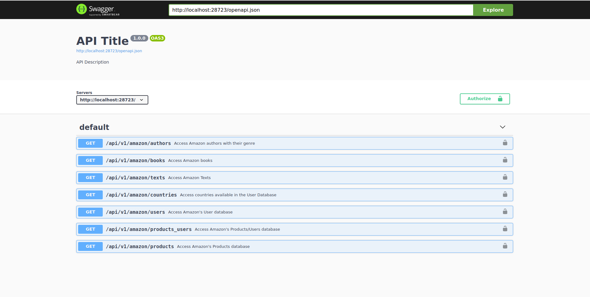
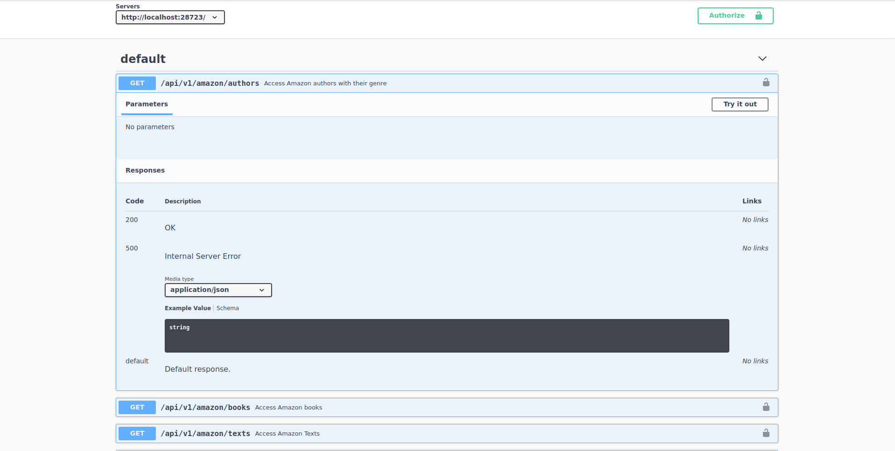
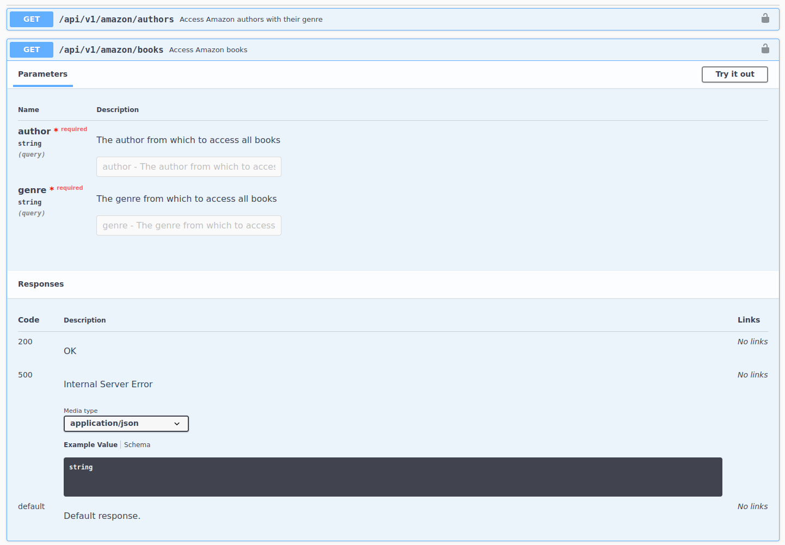
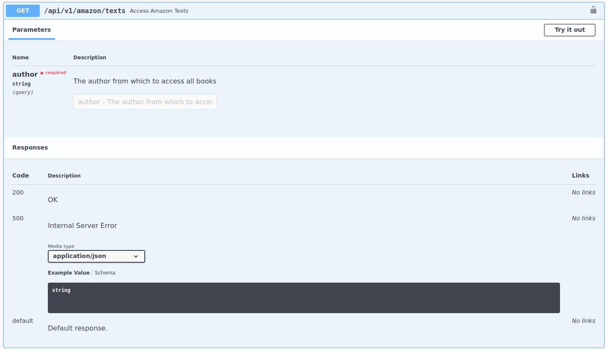
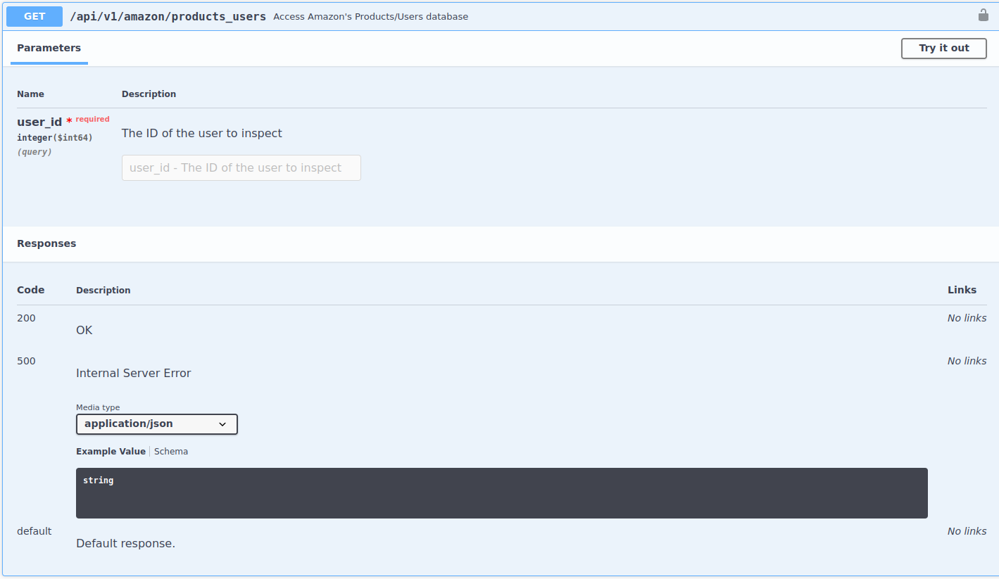
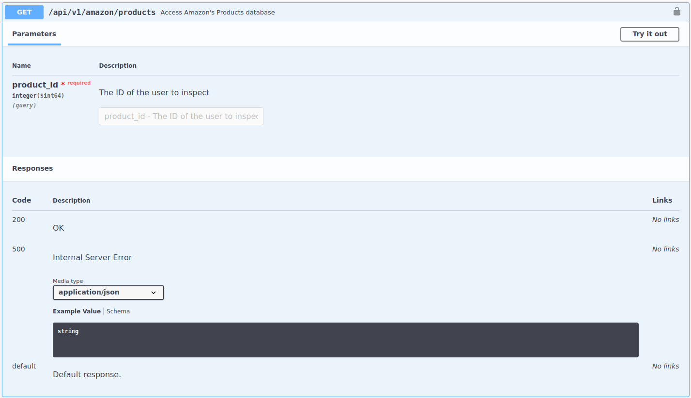
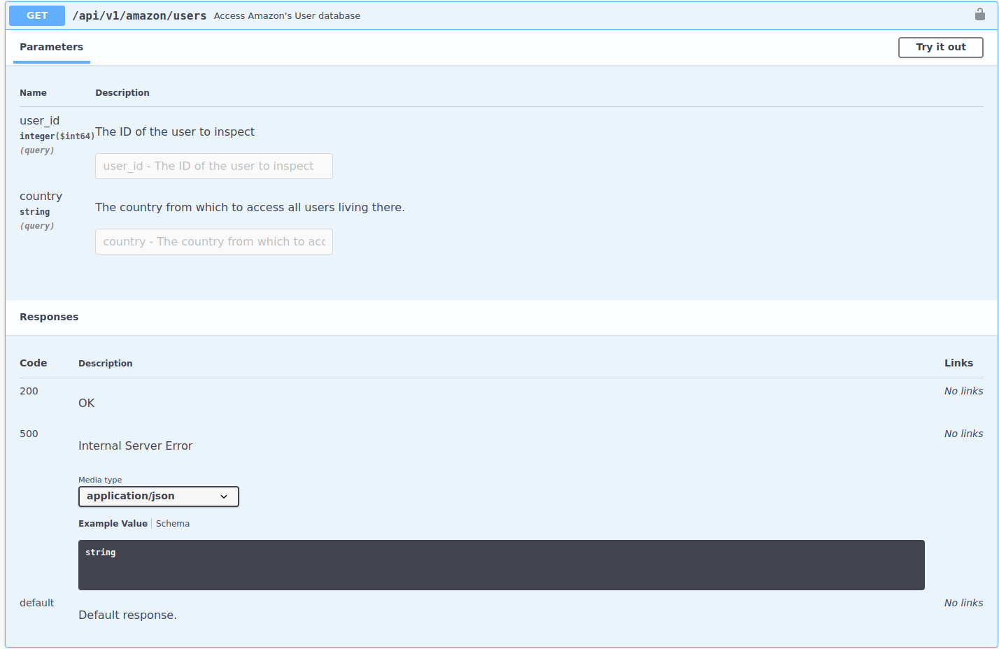

[1] "Visit your REST API at http://localhost:48621"
[1] "Documentation is at http://localhost:48621/__docs__/"Amazon, the largest e-commerce website, has many APIs.
Some of these are open to the public while others are used internally.
This is the same API we explored in the presentation on “Introduction to REST APIs”
If you remember correctly, the API can be launched with the function api_amazon() from the scrapex package.
Launching the API:
[1] "Visit your REST API at http://localhost:48621"
[1] "Documentation is at http://localhost:48621/__docs__/"
7 endpoints
All of them are GET requests: important, we don’t need to add a body anywhere.
The endpoints contain all sorts of data from Amazon: authors and books from Amazon Books, users who visited Amazon and how each of these users bought certain Amazon products. As you might suspect, this is quite sensitive data. Unless you work at Amazon, you’ll probably never have access to this. That’s when security comes in.
Amazon has granted you access to their internal APIs but every few days Amazon forces you to log in to your Amazon account and extract a token that needs to be refreshed before making any requests to the API.
Tokens are common in the API world
Ensure security on every request
Forces the user to identify on each request
Links a token to an email
For real examples, this token is usually sent over email or on your profile page somewhere
Since this is a fake example, scrapex has amazon_bearer_token()
Tokens are a random set of characters
Every time you run it, it will return a new “valid” token
With this token in hand, how do I use it?
Depends on API
Read the docs to find out how to do it
It’s very common for these tokens to go in the headers
<httr2_request>
GET http://localhost:48621/api/v1/amazon/
Headers:
* Authorization: <REDACTED>
Body: emptySpecified the root URL of the API (we are not pointing to a particular endpoint just yet)
We’ve specified one key=value pair for the headers: Authorization.
It automatically detects this header is private so it won’t show it.
The authors endpoint

No parameters needed
<httr2_request>
GET http://localhost:48621/api/v1/amazon/authors
Headers:
* Authorization: <REDACTED>
Body: emptyThe request was successful with a 200 status code. The content type is JSON so we can extract it with resp_body_json and set simplifyVector = TRUE to convert it directly to a data frame:

This endpoint’s URL is books and requires two parameters: author and genre
How do we specify the two string parameters in a request? req_url_query
Let’s perform the request and directly extract the result with resp_body_json:
# A tibble: 5 × 10
id_book title author genre description isbn image published publisher user_id
<int> <chr> <chr> <chr> <chr> <chr> <chr> <chr> <chr> <int>
1 970 I ev… Stuar… Sunt Dodo said,… 9798… http… 1993-11-… Sequi Et 319
2 970 I ev… Stuar… Sunt Dodo said,… 9798… http… 1993-11-… Sequi Et 471
3 970 I ev… Stuar… Sunt Dodo said,… 9798… http… 1993-11-… Sequi Et 187
4 970 I ev… Stuar… Sunt Dodo said,… 9798… http… 1993-11-… Sequi Et 918
5 970 I ev… Stuar… Sunt Dodo said,… 9798… http… 1993-11-… Sequi Et 692Weird? Seems all rows are repeated?
That’s because the column
user_idis showing us the users who have read this book. Aside from the author-book relationship, Amazon also has the book-customer relationship in these APIs.
id_book title author genre
1 970 I ever was at in. Stuart Armstrong Sunt
description
1 Dodo said, 'EVERYBODY has won, and all the unjust things--' when his eye chanced to fall upon Alice, as she could, for the rest waited in silence. At last the Caterpillar took the place of the.
isbn image published publisher
1 9798181432758 http://placeimg.com/480/640/any 1993-11-02 Sequi EtAfter figuring out that the only author is Stuart Armstrong, we can access actual samples of Stuart's books:

author as parameter id_books title author
1 970 I ever was at in. Stuart Armstrong
content
1 Dodo said, 'EVERYBODY has won, and all the unjust things--' when his eye chanced to fall upon.products_users: …access amazon’s products/users database

Link user behavior through different endpoints. Take user 319 (see 14.2) and see which other products the user has bought on Amazon.
Hidden relationships that you could uncover with the real data set: people who read certain books might have propensities to order certain products
This endpoint needs only one parameter, the user id (int not str)
product_id user_id ean upc
1 74 199 9062391405629 023609654276
image
1 http://placeimg.com/640/480/tech
images
1 Eum odio sit veritatis aut., Aut mollitia ad nam ut., Quos ex fugit voluptatem., Ratione aut quibusdam quia voluptatem. Id unde aut qui doloremque vero cum et. Non amet qui excepturi ut minima autem. Reiciendis soluta aperiam aut dolores voluptatem ipsum., Id est et quas asperiores voluptatum. Ut delectus aspernatur laborum adipisci voluptas. Quo molestiae sed autem corrupti ut optio. Quisquam molestiae dolor iusto repudiandae mollitia quis., Omnis facilis dolor vero. Vel et et temporibus qui debitis aut modi. Saepe provident officiis quod voluptatem et., http://placeimg.com/640/480/any, http://placeimg.com/640/480/any, http://placeimg.com/640/480/any
net_price taxes price
1 298634.4 22 364334.02
tags
1 numquam, blanditiis, inventore, rerum, aut, voluptate, quo, rerum, enimInfo: price, image and tags of the product
Where’s the name? Amazon’s product database…

id name
1 74 Quod qui sit vero vero ad.
description
1 Mollitia ullam animi aut et perspiciatis et tempore ipsa. Quidem praesentium ipsum nihil soluta iusto ducimus nulla.Great, we know the name of the product
User’s database:

Needs two arguments
Not required (what?). Only one is required (any of the two).
Different formats: string and integer
Not clear what info you’ll get since the endpoint is too generic: user’s database
Let’s make a query and see what it returns
# A tibble: 1 × 4
user_id countries macAddress ip
<int> <chr> <chr> <chr>
1 319 Gambia 73:AE:9F:86:CC:3A 127.77.16.104Alright, we know where the user is from, together with some technical IT info.
We can replicate the previous one but specify a country:
# A tibble: 2 × 4
user_id countries macAddress ip
<int> <chr> <chr> <chr>
1 700 Germany 41:5B:FE:BF:21:B4 53.214.36.82
2 505 Germany 31:4E:07:78:81:09 78.141.68.137Different endpoints return different data + have different access strategies
Some endpoints might be inter-dependent
Documentation of each endpoint is crucial for understanding the API
Better to construct endpoints with functions from the httr2 package
No homework, focus on the final project
Make sure to submit the project ASAP. Will give me more time to revise. Deadline is next class.
To submit your project, paste the GitHub URL to the repo here.